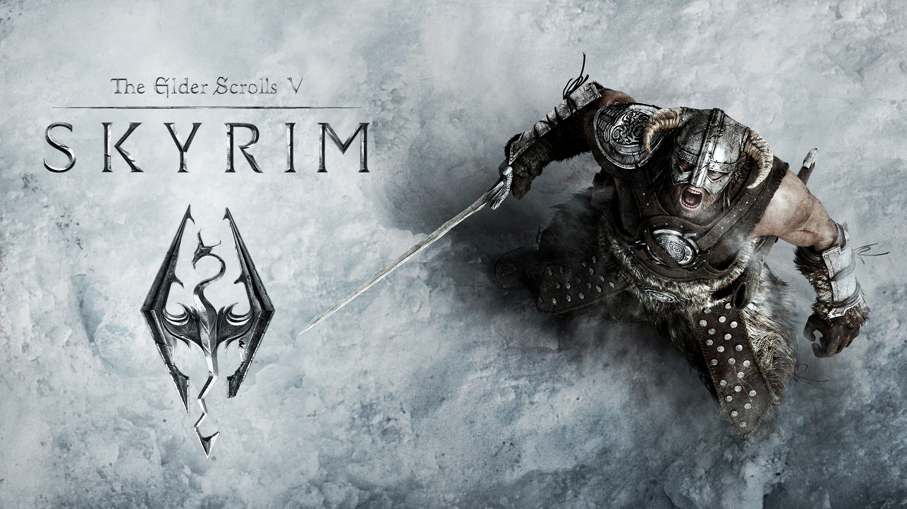

The Elder Scrolls V: Skyrim — Саундтрек

О саундтреке
Саундтрек к игре The Elder Scrolls V: Skyrim, написанный Джереми Соулом, стал одним из самых узнаваемых в истории видеоигр. Главная тема «Dragonborn» с хором, исполняющим текст на вымышленном драконьем языке, мгновенно погружает в суровую атмосферу Скайрима.
Альбом содержит более 50 композиций, от эпических боевых тем («One They Fear») до медитативных пейзажных зарисовок («Secunda»). Соул использовал живой оркестр и хор, что было редкостью для игр того времени.
Главная тема (YouTube)
Ключевые композиции
- Dragonborn — главная тема
- Secunda — ночная атмосфера
- Far Horizons — тема путешествий
- One They Fear — битва с драконом
- The Streets of Whiterun — городская тема